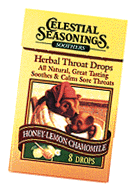
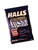

|
People at the grocery store don't
recognize me. No one points at me when I
walk down the street. When I introduce
myself at a party, ears don't perk up. I guess that's life as a Web celebrity.
Recently, I was lounging in my expensive, new bathrobe, watching workers install another bunk on
my bed when I realized: There is room for more people like me. Even the least popular show on
network television has more viewers than the most popular page on the Web. The Web community is
small. It's easy to become notorious or famous on the Web. Anyone can be a celebrity in the virtual
world.
10 STEPS TO BECOMING A WEB CELEBRITY
1. DEVELOP A PERSONALITY
OUTSIDE THE WEB.
For example, this guy doesn't qualify. (http://www.usl.edu/Departments /CACS/
Staff/landry.html)
2. BE CREATIVE, ORIGINAL
AND OWN A COMPUTER.
Although, it only really matters if you own a computer.
3. THINK UP A NAME FOR YOURSELF.
I chose Mirsky. You might want to choose something else. Some suggestions: Bronsky, Ballsky,
Flopsky or Tursky.
4. REALIZE YOU DON'T
NEED TO BE A REAL PERSON.
Photo of Martha Breckenridge, 57, the woman behind "Mirsky"
5. CREATE YOUR OWN PAGE.
It doesn't need to be special or interesting. For example, you might want to create a page about
lozenges. Show different kinds of lozenges. Time how long they last and describe which ones taste
best. Maybe explain "menthol." Do it soon, though -- do you have any idea how many people will read
this column?
6. GET AS MANY LINKS TO
YOUR SITE AS YOU CAN.
It's expensive, but you might want to give away a car. A few months ago, I entered an online contest
and won a nice, insulated cup. If you can't give away any merchandise, offer sex. Promote it by saying
your page has "more nudity than humanly possible." That should get people to look at it.
7. GARNER AS MANY
WEB AWARDS AS POSSIBLE.
Here are some of them: Funky Site of the Day
http://www.realitycom.com/cybstars/index.html; Fred's Web Hotspots,
http://www.winmag.com/flanga/hotspots.htm; Mexico Cool Site of the Day
http://dch.mty.itesm.mx/cool/.
When you've been named Barbara's Best Bookmark of the Day
http://www.shsu.edu/users/std/stdkco/pub2/best.html, you know that
CNN can't be far behind. Display all awards, no matter how obscure.

8. GET A REAL CELEBRITY TO ENDORSE YOUR PAGE.
This is hard. So far, Erik Estrada will not return my calls.
9. THINK LIKE A CELEBRITY.
This is the most important aspect of becoming a Web celebrity. Although advertisers claim that
millions of people use the Web, only a few thousand ever read a particular Web page on a given day.
You are more likely to become famous by writing an editorial in your local paper. To become a
celebrity on the Web, it's thus imperative that you forget that your audience is small.
You must act and think like you are world-renown. To take on that indifferent air that makes celebrities
so attractive, do the following:
- Don't answer e-mail.
- Make people read a lot of reviews of your
site before they can actually see it.
- Make graphics of your name huge and appear everywhere

10. ENJOY THE BENEFITS OF BEING A WEB CELEBRITY.
It's hard for me to determine the benefits of being a Web celebrity. Once, I got e-mail from Courtney
Love. Oh yeah, I almost forgot.
I also got to write this column even though I really don't what
the hell I'm talking about.
|